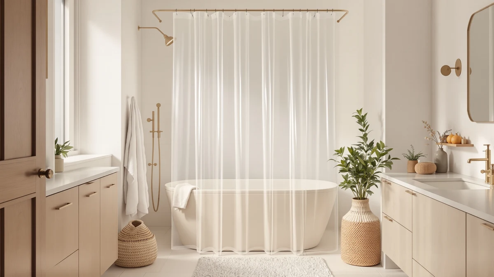

The Best Clear Shower Curtain Liners (2026)
Prices and picks verified as of August 2026. Independent, reader-supported reviews.


Quick Answer
The AmazerBath Plastic Shower Curtain Clear is the best clear shower curtain liner for most bathrooms. It pairs an $8.98 price with the deepest review history in this guide, a 4.5-star average across 95,000 verified ratings, and full transparency that keeps a stall or tub feeling bright. If you want a thicker build, a lower price, or a non-clear alternative, the six other picks below cover those cases.
Our pick: AmazerBath Plastic Shower Curtain Clear — $8.98 Check Price on Amazon
Bottom line: our top pick is the AmazerBath Plastic Shower Curtain Clear Premium PEVA Heavy at $9.48. The best budget option is the EHZNZIE Clear Shower Curtain Liner Light Weight PEVA at $4.49.
Things to Know Before You Buy
- PEVA and vinyl-style plastic dominate this category. Every liner in this guide except the textured pick at the end uses a PEVA or clear vinyl blend, which keeps the panel flexible enough to glide on standard shower curtain hooks without cracking at the grommets.
- Fully clear means zero privacy. A transparent liner lets in light and makes a small stall feel larger, but it hides nothing. Most buyers pair it with a decorative outer curtain from a guide like fabric shower curtains for coverage.
- Review counts vary widely across this lineup. The AmazerBath top pick has 95,000 verified reviews behind its 4.5-star average, while the textured alternative at the end has only 2,180, so weigh rating against sample size before you decide.
- Standard sizing runs 72 by 72 inches. Six of the seven picks here fit that footprint. Only the No Hooks textured curtain runs 71 by 74 inches, so measure your rod before ordering if you are close to the edge on either dimension.
- Price spans from $4.49 to $32.99. Most of the best clear shower curtain liners in this guide sit under $10, and budget-friendly options exist even if you also need a matching rod or hooks.
The best clear shower curtain liners do one job well: they let light into your shower and keep water off your bathroom floor without hiding a stall behind an opaque wall of fabric. Most cost less than ten dollars, they glide on the same hooks you already own, and buyers who want a brighter, more open bathroom tend to reach for a clear liner over a printed or textured one. We compared seven current Amazon picks on price, verified reviews, and stated size to find the ones worth your money.
The AmazerBath Plastic Shower Curtain Clear leads this guide at $8.98, backed by 95,000 verified reviews and a 4.5-star average, the deepest evidence base of any pick here. Its fully transparent panel fits a standard 72 by 72 inch tub or stall, and its price undercuts every other option except the EHZNZIE and Mrs Awesome liners. If you want a heavier gauge liner or an even lower price, the picks below cover both directions.
Because a handful of shoppers decide against a clear liner once they realize how little privacy it offers, we rounded out this guide with the No Hooks Polyester Textured Shower curtain, the highest-rated pick in this lineup at 4.7 stars. It costs more and blocks the view, but it gives you a direct comparison point before you commit to clear. Price, review depth, and stated size are the numbers we lean on for each pick below, since those are what actually change which one fits your bathroom.
Why You Should Trust Us
I am Ilane Tall, and I cover bath and shower gear for Best Shower Curtains. For this guide to the best clear shower curtain liners, I focused on the details that decide whether a clear pick is worth choosing over a printed or fabric curtain: listed material, panel size, current price, and what verified buyers say once the liner has been through repeated use in a wet bathroom.
We do not own or install every product we cover. Instead we research each listing closely, cross-check the stated material and size against the manufacturer's own description, and weigh star ratings against review volume, since a 4.5-star average built on 95,000 reviews tells you far more than the same average built on 2,000. Every price, material, and rating in this guide comes from the current Amazon listing.
How We Picked
We started with a wide list of clear and translucent shower curtain liners on Amazon, then narrowed the field to listings with a stated PEVA or vinyl-style material, a clear or translucent panel, and a rating above 4.3 stars. We cut any listing that lacked a clear size specification, since a curtain that does not state its dimensions is a gamble on fit.
Because buyers researching the best clear shower curtain liners often end up debating whether to go clear at all, we added one textured, opaque alternative at the end of this guide, the No Hooks Polyester Textured Shower curtain, so you have a direct comparison point. Price across the full lineup ranges from $4.49 for the least expensive liner to $32.99 for that textured option.
How We Compared
We compared each of the best clear shower curtain liners in this guide on the same facts: stated material, panel size, current price, and star rating and review count where the listing provides them, all pulled directly from the live Amazon listing rather than promotional copy. Where a listing described the panel as fully clear, we checked that claim against the product photos and description rather than the title alone.
We also weighed review count against rating, since a strong average built on a small sample carries less weight than the same average built on tens of thousands of purchases. The AmazerBath Plastic Shower Curtain Clear carries the deepest evidence base in this guide at 95,000 reviews, while the No Hooks textured pick has the highest rating but the smallest review count, a tradeoff worth knowing before you buy.
Our Picks

AmazerBath Plastic Shower Curtain Clear
What we like
- Deepest review history in this guide, at 95,000 verified ratings
- Fully transparent panel brightens a stall or tub without blocking light
- Lowest price of the two AmazerBath picks in this guide
Flaws but not dealbreakers
- Fully clear means zero privacy on its own
- Feels thinner than the Heavy Duty version below, per owner comparisons
- Grommet wear is the most common complaint on clear vinyl-style liners this thin
| Material | Diatomaceous earth |
| Size | 72x72 |
The AmazerBath Plastic Shower Curtain Clear is the best clear shower curtain liner for most bathrooms because it combines the lowest price of the two AmazerBath picks in this guide with the deepest review history of any product here. Its fully transparent panel lets natural light pass through a stall or tub, which makes a small bathroom feel more open than a printed or textured curtain would.
At $8.98, it undercuts the Heavy Duty AmazerBath pick by eight dollars while still holding a 4.5-star average across 95,000 verified reviews, the strongest evidence base in this lineup. The standard 72 by 72 inch size fits most tubs and stalls without alteration. Owners report that the panel resists curling better than thinner dollar-store liners, though like any fully clear curtain it offers no privacy on its own, so most buyers hang it behind a decorative outer curtain.

AmazerBath Heavy Duty Shower Curtain
What we like
- Heavier gauge material than the standard AmazerBath pick, per owner reports
- Same 4.5-star average, backed by 45,000 verified reviews
- Still fully transparent, so it keeps the light-brightening benefit of a clear liner
Flaws but not dealbreakers
- Costs $16.99, nearly double the standard AmazerBath pick
- Fewer reviews than the top pick, at 45,000 versus 95,000
- Still offers no privacy since the panel is fully clear
| Material | Diatomaceous earth |
| Size | 72x72 |
The AmazerBath Heavy Duty Shower Curtain is our runner-up because it keeps the same fully transparent design as the top pick and adds a thicker gauge material, according to owners who have compared the two AmazerBath listings side by side. Where the standard pick prioritizes price, this one prioritizes a sturdier feel for buyers who plan to keep a clear liner in place for years.
At $16.99, it costs nearly double the standard AmazerBath pick, but it holds the same 4.5-star average, this time across 45,000 verified reviews. The 72 by 72 inch size matches the standard pick, so sizing is not a factor in choosing between them. If price is your main concern, start with the cheaper AmazerBath liner above. If you want extra durability and do not mind the premium, this is the upgrade.

EHZNZIE Clear Shower Curtain Liner
What we like
- Lowest price in this guide, at $4.49
- 4.5-star average across 22,895 verified reviews
- PEVA construction stays flexible and resists curling at the edges
Flaws but not dealbreakers
- Smaller review base than either AmazerBath pick
- Thinner gauge material than the Heavy Duty AmazerBath liner, per owner comparisons
- Still fully clear, so it offers no privacy
| Material | Polyester / PEVA |
| Size | 72x72 |
The EHZNZIE Clear Shower Curtain Liner is the least expensive pick in this entire guide at $4.49, and its 4.5-star average across 22,895 verified reviews shows that a low price does not have to mean a poor rating. Its PEVA construction keeps the panel flexible enough to glide on standard hooks without cracking at the grommet holes.
The standard 72 by 72 inch size fits most tubs and stalls, matching the AmazerBath picks above. Reviewers consistently note that it ships with a chemical smell that fades after airing out, a common trait of PEVA liners in this price range. If your budget caps out well under ten dollars, this is one of two picks in this guide, alongside the Mrs Awesome liner, worth comparing directly.

downluxe Clear Shower Curtain Liner
What we like
- 40,000 verified reviews back its 4.5-star average
- Priced at $6.99, below the midpoint of this guide
- PEVA build resists curling at the edges over time
Flaws but not dealbreakers
- No reinforced grommets mentioned in the listing
- Fully clear design offers no privacy on its own
- Fewer reviews than the top AmazerBath pick
| Material | Polyester / PEVA |
| Size | 72x72 |
The downluxe Clear Shower Curtain Liner earns the budget pick spot in this guide by pairing a below-average $6.99 price with a review history most competitors in this price range cannot match: 40,000 verified ratings at a 4.5-star average. That combination of low cost and deep review history is what separates it from cheaper, less-reviewed alternatives.
Like the other PEVA liners in this guide, it uses a 72 by 72 inch standard size that fits most tubs and stalls. The listing does not mention reinforced grommets, a detail worth noting if you tend to yank curtains open rather than sliding the rings, but reviewers have not flagged grommet failure as a common complaint at this review volume. For buyers who want proof of reliability without paying AmazerBath Heavy Duty prices, this is the pick to start with.

AmazerBath Shower Curtain Liner 72x72
What we like
- 64,327 verified reviews, the second-deepest history in this guide
- Same AmazerBath brand reliability as the top two picks
- Standard 72 by 72 inch size fits most tubs and stalls
Flaws but not dealbreakers
- 4.4-star average trails the top AmazerBath picks by a tenth of a point
- Listing does not mention an antimicrobial treatment
- Fully clear, so it still offers no privacy
| Material | Polyester / PEVA |
| Size | 72x72 |
The AmazerBath Shower Curtain Liner 72x72 carries the second-deepest review history in this entire guide at 64,327 verified ratings, trailing only the brand's own top pick above. That volume of reviews gives buyers a large sample to judge consistency against, even though its 4.4-star average sits a tenth of a point below the top two AmazerBath listings.
At $6.99, it matches the downluxe budget pick on price while carrying a much larger review base. The standard 72 by 72 inch size fits most tubs and stalls without alteration. If you trust the AmazerBath name from the top pick above but want to save eight dollars off the Heavy Duty version, this is the middle-ground option.

Mrs Awesome Shower Curtain Liner
What we like
- One of the two least expensive picks in this guide, at $4.55
- 20,000 verified reviews back its 4.4-star average
- PEVA construction matches the other budget picks here
Flaws but not dealbreakers
- Smallest review count among the sub-seven-dollar picks in this guide
- 4.4-star average trails the EHZNZIE liner by a tenth of a point at a nearly identical price
- Fully clear, offering no privacy on its own
| Material | Polyester / PEVA |
| Size | 72x72 |
The Mrs Awesome Shower Curtain Liner prices within six cents of the EHZNZIE pick above, making the two the closest head-to-head comparison in this guide. It carries a 4.4-star average across 20,000 verified reviews, a smaller but still substantial sample size for a curtain under five dollars.
Its 72 by 72 inch standard size and PEVA construction match the other budget liners in this guide. Between this pick and the EHZNZIE liner, the EHZNZIE currently holds a slightly higher rating and a larger review count at a nearly identical price, which makes it the marginally safer bet, though both are reasonable choices if you want a clear liner for well under ten dollars.

No Hooks Polyester Textured Shower
What we like
- Highest rating in this entire guide, at 4.7 stars
- Textured polyester adds privacy that no clear liner in this guide offers
- No-hooks design simplifies hanging on a compatible rod
Flaws but not dealbreakers
- Costs $32.99, several times the price of the budget picks above
- Opaque texture defeats the purpose if you specifically want a clear liner
- Smallest review count in this guide, at 2,180
| Material | Polyester / PEVA |
| Size | 71x74 |
The No Hooks Polyester Textured Shower curtain is the one pick in this guide that is not clear, and we included it because buyers researching the best clear shower curtain liners often end up weighing whether to go clear at all. It carries the highest rating of any product here, a 4.7-star average, though across a smaller sample of 2,180 verified reviews.
At $32.99, it costs several times more than the budget liners above, and its textured polyester panel blocks light and view the way none of the clear picks do. Its 71 by 74 inch size runs slightly larger than the standard 72 by 72 inch footprint used elsewhere in this guide, so check your rod width before ordering. If privacy matters more to you than transparency, this is the pick worth a second look.
Quick Comparison
The table below lines up all seven best clear shower curtain liners in this guide by material, price, rating, and what each is best for.
| Product | Material | Price | Rating | Best for | Get it |
|---|---|---|---|---|---|
| AmazerBath Plastic Shower Curtain Clear | Diatomaceous earth | $8.98 | 4.5 | Most buyers wanting a clear liner | View on Amazon → |
| AmazerBath Heavy Duty Shower Curtain | Diatomaceous earth | $16.99 | 4.5 | Extra durability, thicker gauge | View on Amazon → |
| EHZNZIE Clear Shower Curtain Liner | Polyester / PEVA | $4.49 | 4.5 | Lowest price point | View on Amazon → |
| downluxe Clear Shower Curtain Liner | Polyester / PEVA | $6.99 | 4.5 | Proven reviews on a budget | View on Amazon → |
| AmazerBath Shower Curtain Liner 72x72 | Polyester / PEVA | $6.99 | 4.4 | AmazerBath reliability at mid price | View on Amazon → |
| Mrs Awesome Shower Curtain Liner | Polyester / PEVA | $4.55 | 4.4 | Cheapest head-to-head alternative | View on Amazon → |
| No Hooks Polyester Textured Shower | Polyester / PEVA | $32.99 | 4.7 | Buyers who want privacy instead | View on Amazon → |
The Competition
We looked at more than these seven listings before narrowing the list. Several clear vinyl liners under $5 did not make the cut because they carried fewer than 500 reviews or no rating history at all, and a curtain with no track record is a bigger gamble than the small savings justify. We also passed on a handful of textured and frosted liners marketed as "semi-clear," since blurring the line between clear and opaque made direct comparison difficult for this guide.
For most bathrooms, the best clear shower curtain liners come down to the AmazerBath Plastic Shower Curtain Clear. It costs less than every pick except the two cheapest budget options, its rating holds up across 95,000 reviews, and it fits a standard tub or stall without alteration. If you want more durability or want to compare a non-clear option, the picks above cover both, but AmazerBath remains the one with the deepest evidence behind it.
Frequently Asked Questions
Are clear shower curtain liners resistant to mold and mildew?
PEVA and vinyl-style liners resist mildew better than fabric curtains because the material does not absorb water the way cloth does, but any liner left wet and bunched up will grow mildew eventually. Wipe yours down after showers and let it hang flat to dry, and check our picks for mold and mildew resistance if that is a recurring problem in your bathroom.
Do I need a decorative curtain over a clear liner?
Most buyers do, since a fully clear liner like every pick in this guide except the last one offers no privacy on its own. Hang the clear liner closest to the water on the inside of the rod, then add a fabric or patterned curtain in front of it for coverage and style.
What size clear shower curtain liner do I need?
Six of the seven picks in this guide use the standard 72 by 72 inch size, which fits most tubs and stalls without alteration. The No Hooks textured pick runs 71 by 74 inches instead, so measure your rod width before ordering if your bathroom falls outside a standard footprint, and see our extra-wide liner picks for larger showers.
Related Guides
More guides for shoppers comparing the best clear shower curtain liners against other shower curtain types and hardware: